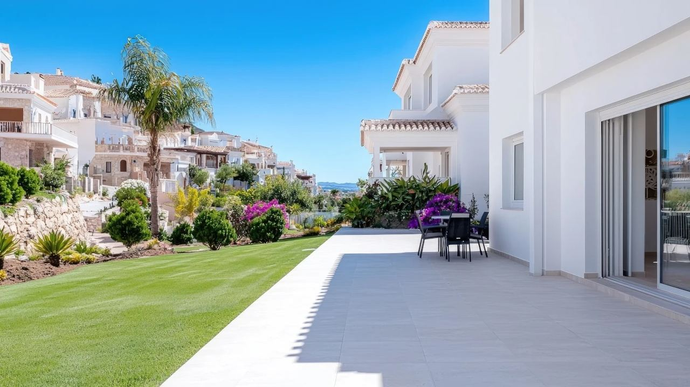

Owning in Spain · Renting out
Short-Term Rental Rules in Spain in 2026 – What Owners Need to Know
 By Aleksandra Kobus · · updated · 5 min read
By Aleksandra Kobus · · updated · 5 min read
In short: To rent a home to tourists in Spain you need a tourist licence (a registration in the regional tourism register), and its number must appear in every listing. The national rental register launched in July 2025 was annulled by the Supreme Court in May 2026, so the regional registers are again what counts, while the EU platform regulation has applied since 20 May 2026. In apartment buildings, new tourist rentals need the approval of three-fifths of the owners since April 2025. Some towns, such as Málaga city, have stopped new licences. You must also register guests with the police and pay tax on the income.
Holiday rentals can pay a good part of the costs of a home in Spain, but the rules have changed a lot since 2024. Some changes came from Madrid, some from the regions and town halls, and one big national change was cancelled by the courts in 2026.
This guide sums up where things stand in autumn 2026, with a focus on the Costa Blanca and the Costa del Sol, and what to check before you buy a home you want to rent out.
What has changed since 2024
| Date | Change |
|---|---|
| Aug 2024 | New Valencian rules for tourist homes (Decreto-ley 9/2024) |
| Dec 2024 | Hosts must send detailed guest data to the Ministry of the Interior |
| 3 Apr 2025 | New tourist rentals in apartment buildings need approval from 3/5 of the owners |
| 1 Jul 2025 | National short-term rental register starts |
| 19 May 2026 | Supreme Court annuls the national register procedure; the data-sharing system stays |
| 20 May 2026 | EU regulation on short-term rental data applies across the EU |
| 25 Jul 2026 | Málaga city stops new tourist flats in residential areas for up to three years |
Licence and registration number
A home rented to tourists must be registered in the tourism register of its region. In the Valencian Community this is the Registro de Turismo de la Comunitat Valenciana, in Andalusia the Registro de Turismo de Andalucía. The registration gives you a number that must be shown in every advert.
From July 2025 Spain also required a separate national registration number from the land registry for every listing on Airbnb, Booking and similar platforms. In May 2026 the Supreme Court annulled this procedure because registration is a matter for the regions. What remains is the digital data-sharing system, through which platforms send listing and booking data to the authorities, as the EU regulation requires since 20 May 2026.
In practice, a legal holiday rental now needs a valid regional registration whose number appears in all listings. Platforms remove listings without one.
Your neighbours have a say
Since 3 April 2025, an owner in an apartment building or community who wants to start renting to tourists needs the approval of three-fifths of the owners at a community meeting. The community can also raise the fees for tourist flats by up to 20%.
Homes that were already legally rented to tourists before that date keep their right. Before you buy, check the community's statutes and the minutes of recent meetings, because some communities have banned tourist rentals altogether.
Costa Blanca and Costa del Sol: regional rules

Valencian Community (Costa Blanca)
- A tourist rental is any stay of up to 10 days by the same guest, and renting by the room is not allowed.
- To register you need a favourable municipal report confirming that tourist use is allowed at that address under local planning rules.
- The property must have a valid cadastral reference, and owners must renew their registration with an updated declaration. In 2025 the Generalitat removed more than 10,000 homes from the register for missing data.
- Town halls can limit tourist flats. Valencia city and Alicante city have restricted new ones, and the rules differ street by street.
Andalusia (Costa del Sol)
- Registration in the Andalusian tourism register, with stricter equipment rules since 2024, such as air conditioning.
- Town halls can cap tourist flats per building or area. Málaga city stopped new tourist flats in residential areas from 25 July 2026 for up to three years.
- Marbella, Mijas and Benalmádena saw the number of tourist flats fall in 2026 as rules tightened.
Guests and taxes
Guest registration. Since December 2024 hosts must send each guest's identity, contact and payment details to the Ministry of the Interior (SES.HOSPEDAJES) within 24 hours of the booking or arrival. Most property managers do this automatically.
Income tax. Rental income is taxable in Spain. Non-residents file form 210 and pay 19% (EU, Norway, Iceland, after costs) or 24% (others, on gross income). Residents include it in their yearly return. Platforms report your bookings to the tax office, so undeclared income is easy to spot. Our guide to resident and non-resident tax explains the difference.
VAT. A holiday rental without hotel-type services such as daily cleaning or reception is VAT-exempt.
Tourist tax. There is currently no tourist tax in the Valencian Community or Andalusia.
Before you buy a home to rent out
- Ask whether the home already has a tourist registration, and whether it can be kept or transferred to you.
- If not, check with the town hall that tourist use is allowed at that address.
- Read the community statutes and recent minutes for bans or the 3/5 vote.
- Check the equipment and safety rules of the region.
- Budget for a property manager, cleaning, guest registration and taxes.
- Compare with long-term or seasonal rental, which avoids most of these rules.
A home with a valid licence in a building that allows tourist rentals is worth more, and we always check this for buyers who plan to rent.
Frequently asked questions
Do I still need the national rental registration number in Spain?
The national register procedure was annulled by the Supreme Court in May 2026. You need a valid registration in your region's tourism register, and its number must appear in your listings.
Can my neighbours stop me renting to tourists?
Yes. Since April 2025, a new tourist rental in an apartment building needs approval from three-fifths of the owners, and community statutes can ban it. Homes already legally rented before then keep their right.
Can I get a tourist licence for any home on the Costa Blanca?
Not always. You need a favourable municipal planning report, and towns such as Alicante and Valencia have limited new tourist flats. Check before you buy.
How is holiday rental income taxed for non-residents?
With form 210: 19% on net income for EU, Norwegian and Icelandic residents, 24% on gross income for everyone else.
Is there a tourist tax in Alicante or Málaga?
Not at the moment. Neither the Valencian Community nor Andalusia charges a tourist tax.
Buy a home you can legally rent
If rental income is part of your plan, we check the licence, the community rules and the town's policy before you make an offer. Contact us and we will show you homes where holiday rental is allowed.
Sources: Andersen – Supreme Court ruling 620/2026 on the national rental register · EUR-Lex – Regulation (EU) 2024/1028 on short-term rental data · BOE – Decreto-ley 9/2024 (Valencian tourist homes) · Generalitat Valenciana – Tourist homes